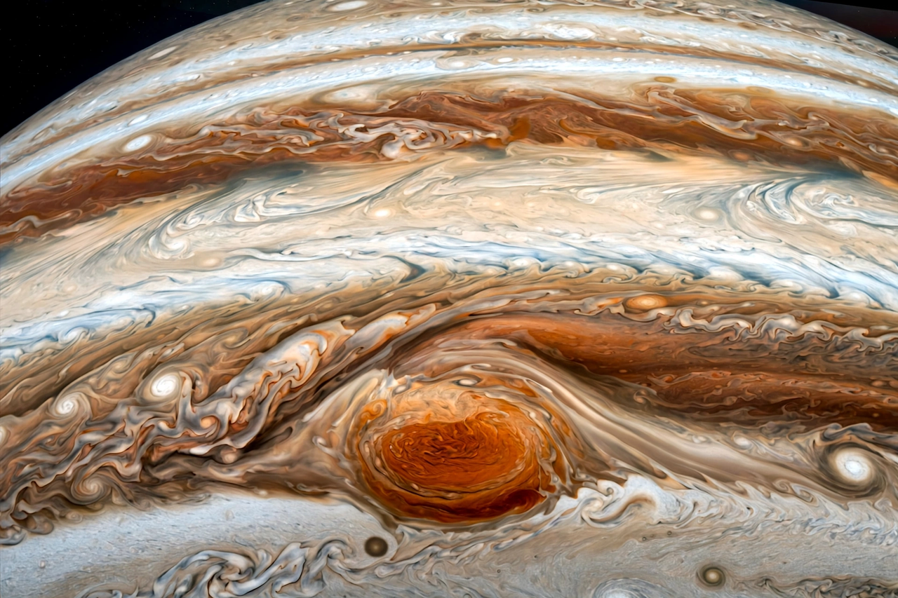

Great Red Spot
From Wikipedia, the free encyclopedia

The Great Red Spot is a persistent high-pressure region in the atmosphere of Jupiter producing an anticyclonic storm — the largest storm in the Solar System. Located in Jupiter's southern hemisphere, it has been observed since at least 1831, and possibly since 1665. The storm is large enough to contain the Earth, though it has been shrinking over the decades of observation.
Characteristics
The Great Red Spot rotates counterclockwise with a period of about six Earth days. Its winds peak at roughly 425 km/h (264 mph) at the edges. Its red colour is thought to come from complex organic compounds or phosphorus- and sulfur-bearing chemicals lifted from deeper in the atmosphere, but the exact cause remains uncertain.
History of observation
A spot on Jupiter was reported by Robert Hooke in 1664 and Giovanni Cassini described a 'permanent spot' from 1665; whether it was the same storm is disputed. Continuous records begin in the 19th century. Spacecraft including Voyager, Galileo, Cassini and Juno have imaged the storm in detail.
Shrinking
In the late 19th century the spot was estimated at around 40,000 km long; recent measurements put it at roughly 16,000 km across, and it continues to shrink and become more circular, for reasons astronomers are still studying.